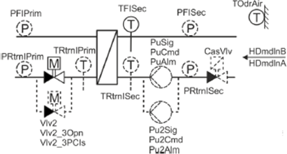
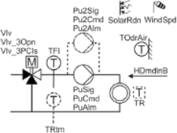
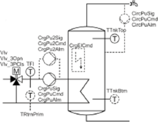
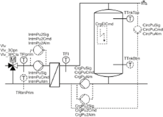
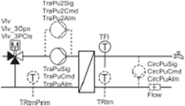
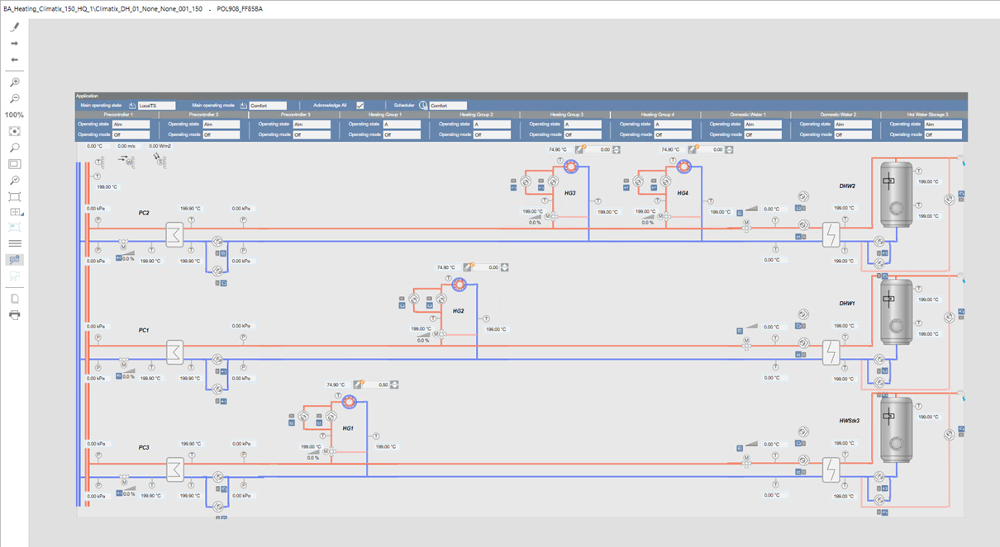
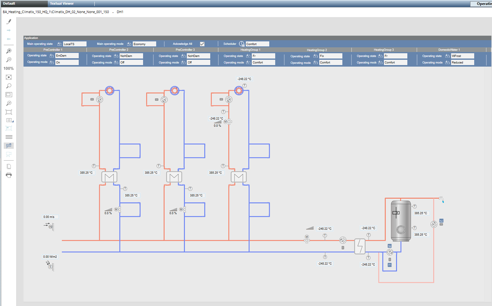

Climatix Heating System Graphic Templates
The document Climatix DH BACnet Objects CE1Z2912en states that the Climatix application DH includes predefined monitoring and control function components for monitoring district heating systems.
The following schemas give an overview of selectable measured values and control equipment for the main functions composing a DH application.





The above Climatix DH components are graphically provided in the Desigo CC graphic templates representing the Climatix DH system. The Climatix Heating System extension provides the graphic templates described below.
Climatix_DH_01_None_None_001_150 Graphic Template
This graphic template can cover the full District Heating application composed by 3 x Pre-Controller circuits, 4 x Heating circuits and 3 x Domestic Water. The Solar components, introduced with version 1.20, are not yet represented in graphic templates.

This template provides the best functionalities when used in combination with DH application version 1.20, where specific BACnet objects are provided to allow the template to be very dynamic and capable to cover a wide range of application configurations. With this template, the heating groups and domestic hot water circuits are dynamically moved to the appropriate pre-controller segment based on the configuration. Also, they are directly connected to the main circuit in case pre-controllers are not used. The BACnet objects used for segments assignments are the following:
- HG1HDstSegm: Indicates to which segment the Heating Group 1 is assigned.
- HG2HDstSegm: Indicates to which segment the Heating Group 2 is assigned.
- HG3HDstSegm: indicates to which segment the Heating Group 3 is assigned.
- HG4HDstSegm: Indicates to which segment the Heating Group 4 is assigned.
- DW1HDstSegm: Indicates to which segment the Domestic Hot Water 1 is assigned.
- DW2HDstSegm: Indicates to which segment the Domestic Hot Water 2 is assigned.
- DW3HDstSegm: Indicates to which segment the Storage Tank 3 is assigned.
These BACnet objects are configured in the Climatix controller with the correct value to identify the appropriate segment where the components is linked. The values and meaning of the values for these points are the same for all the listed BACnet objects:
1 = Direct connection (no PreController) | - 2 = PreController 1 |
3 = PreController 2 | - 4 = PreController 3 |
Scenarios like shut off valves in the pre-controllers or multiple domestic hot water circuits connected to the same line are also covered when using DH application v1.20.
This template is associated to the function ClimatixDH_01_150.
Climatix_DH_02_None_None_001_150 Graphic Template
The maximum configuration of this template comprises 3 x pre-controller circuits, 3 x heating circuits and 1 x domestic water circuit.

This template is associated to the function ClimatixDH_02_150.